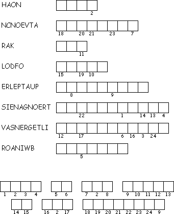

This week's lessons: Genesis 9:8-17, Psalm 25:1-10 , 1 Peter 3:18-22 , Mark 1:9-15
This
week's lessons: Genesis
9:8-17, Psalm
25:1-10 , 1
Peter 3:18-22 , Mark
1:9-15
Middle-School Pew-work
|
The rainbow is a symbol of a promise. Symbols are important reminders of promise - we use rings, for example, as symbols of promises made in marriage. What symbols are important reminders in your own life? _________________________________________________________________________________________________________________________________________________________________________________________________________________________________________________________________________________________________________________________________________________________________________________________________________________________________________________________________ Have you ever made a personal covenant with God? Have you kept your part of the promise? Has God? ________________________________________________________________________________________________________________________________________________________________________________________________________________________________________________________________________________________________________________________________________________________________________ |

|
Next week; Genesis 17:1-7, 15-16, Psalm 22:23-31, Romans 4:13-25, Mark 8:31-38 or Mark 9:2-9